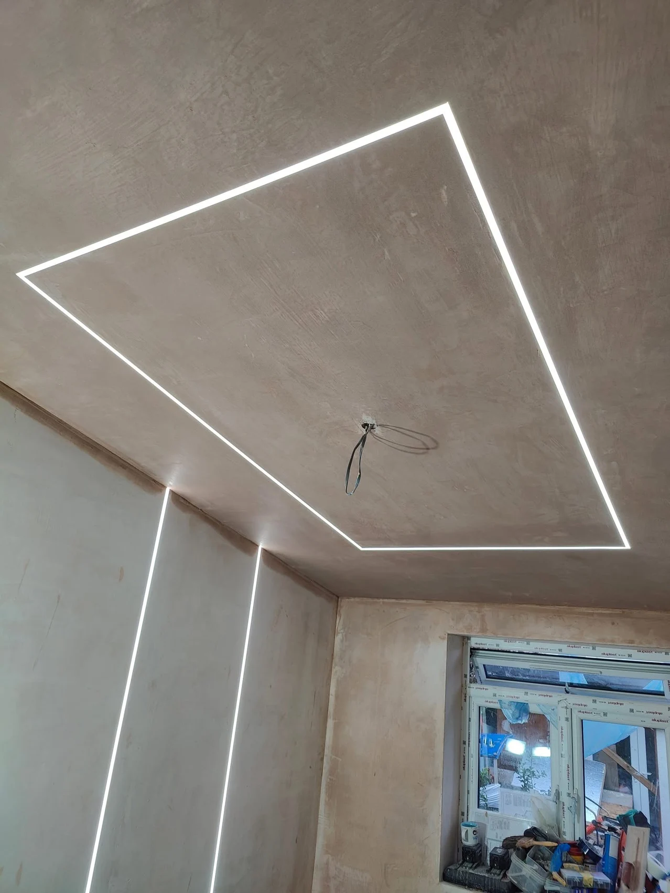

KENT & SOUTH LONDON · PLASTERING SPECIALISTS
Smooth finishes.
Fresh possibilities.
Professional plastering and skimming for your home or business. From surface preparation to the finishing details.
Free quotesDomestic & commercialKent & South London
PLASTERING & PROPERTY SERVICES
A clean surface.
A fresh possibility.
Good plasterwork gives the next stage of a room a better starting point. From tired ceilings to walls ready for refurbishment, Michaelson & Son Ltd helps with plastering, boarding and repairs.
Serving Kent and South London, we welcome domestic and commercial enquiries. Explore the supplied project photographs and tell us the size, condition and finish you have in mind.
About Michaelson & Son →
THE CHANGE IN THE SURFACE
Textured before.
Smooth after.
The same living room, before and after ceiling skimming. A freshly plastered surface changes the starting point for the room’s next finish.
Tap either photo to view the complete image.
Explore our work →WHAT WE DO
From the first board.
To the final surface.
Explore the service you need, then send the details for a free quote.
Plastering & skimming
Wall and ceiling plastering and skimming in Kent and South London. Free quotes from Michaelson & Son Ltd. Call 07450 438251.
Explore this service →Plasterboarding & drylining
Plasterboarding and drylining enquiries across Kent and South London. Discuss walls, ceilings and interior projects with Michaelson & Son Ltd.
Explore this service →Plaster repairs
Plaster patching and repairs for walls and ceilings in Kent and South London. Free project quotes from Michaelson & Son Ltd.
Explore this service →Coving & repairs
Coving repair and finishing enquiries in Kent and South London. Discuss damaged sections and room details with Michaelson & Son Ltd.
Explore this service →Property renovations
Interior renovation, tiling and property improvement enquiries in Kent and South London. Contact Michaelson & Son Ltd for a project discussion.
Explore this service →Rendering enquiries
Discuss rendering requirements, surface preparation and project scope with Michaelson & Son Ltd, serving Kent and South London.
Explore this service →PLASTERING & SKIMMING PRICE GUIDE
A starting point.
A quote for your room.
Guide prices from the supplied business price list, including standard materials.
For example, a bedroom or office
Including standard materialsFor example, a master bedroom
Including standard materialsFor example, a corridor or landing
Including standard materialsFor example, a lounge or dining room
Including standard materialsFinal price depends on room size, condition and scope of work. Ceilings, major repairs and decorative finishes may be extra. Please request a quote for the work required.
Get your free quote →KENT & SOUTH LONDON
Rooms of every size.
Projects close to home.
Send your postcode with your enquiry to confirm availability in your area. We will discuss the surfaces, preparation and access before agreeing the project.
Discuss your location →LET’S TALK ABOUT YOUR PROJECT
A smoother finish.
Starts here.
Tell us the work you need, your postcode and approximate room dimensions. Photographs of the surfaces help us understand the preparation involved.
Prefer email? mihailarabadzhiev@gmail.com
Free quotes. You can attach photographs to your enquiry before sending.
READY FOR THE NEXT STEP?
Let’s talk about
your next finish.
Free plastering and property project quotes.